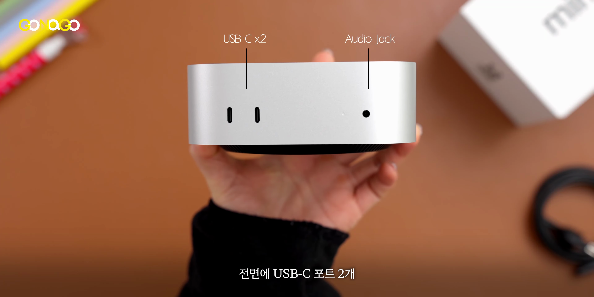
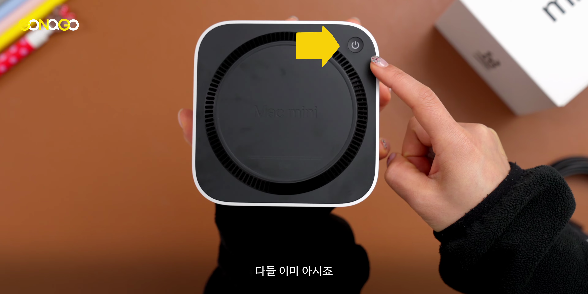
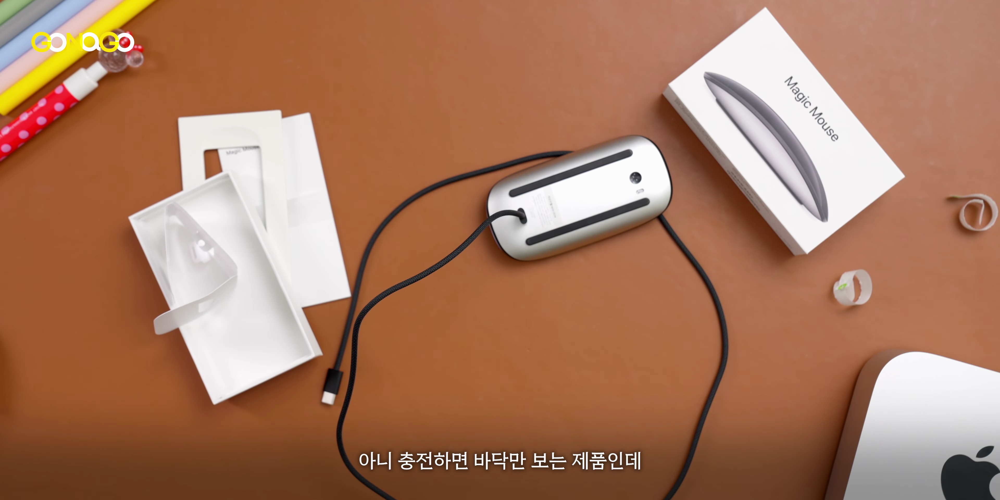

이번 포스트에서는 애플의 새로운 맥미니 모델에 대한 깊은 분석을 제공합니다. M4 칩을 탑재한 맥미니는 놀라운 성능과 다양한 기능을 갖추고 있으며, 과거 모델과의 비교를 통해 진정한 가치가 무엇인지 알아보겠습니다.
맥미니의 크기와 가성비
- 정말 작고 가벼운 맥미니
- 애플의 가성비
- 일반적인 데스크탑으로서는 뛰어난 성능
새로운 맥미니는 작고 가벼우며, 애플이 제공하는 가성비는 정말 놀랍습니다.
많은 관심을 받는 맥미니
- 가장 많은 관심을 받는 모델
- M4 칩으로 업그레이드된 맥미니
- 영상 편집 시스템으로서의 가능성
최근 발표된 맥 라인업 중 맥미니는 가장 많은 관심을 받고 있으며, 써본 사람들은 그 성능에 많은 기대를 하고 있습니다.

업무 셋업 변경 및 성능 후기
- 업무 셋업을 변경할 예정
- 후기와 종합적인 평가 예정
- 일상적인 사용에서의 성능 평가
업무 셋업을 바꿔보고, 성능에 대한 후기와 종합적인 평가는 추후에 공유할 예정입니다.
새로운 디자인의 맥미니
- 홈팟 미니 같은 크기
- 탄소 중립 제품
- 출시된 제품들의 외관
새 맥미니는 홈팟 미니처럼 작고, 디자인도 세련되었습니다. 탄소 중립 제품으로서 환경 친화적입니다.

포트 구성 및 편리함
- USB C 포트와 3.5mm 헤드폰 잭
- M4 모델의 썬더볼트 4 포트
- HDMI 및 기가빗 이더넷 포트
맥미니는 다양한 포트가 구성되어 있어 외부 장치와의 연결이 용이합니다.

가격 대 성능 비교
- 기존 맥 스튜디오와 비교
- 가격 차이의 정도
- GPU 코어 수의 상이함
성능 측면에서 비슷한 제품과 가격을 비교할 때, 맥미니는 선택할 만한 가치가 클 것입니다.

애플 매직 마우스와 키보드
- 무선 충전 방식의 불편함
- 터치 ID 탑재
- 가격이 높은 애플 액세서리
매직 마우스와 키보드는 디자인은 멋지지만, 충전 방식과 가격 때문에 불편함을 느낄 수 있습니다.

서드파티 제품 대비Apple Accessories의 장점
- 소프트웨어와의 완벽한 통합 경험
- 투유 제스처와 입력 방식의 우수성
- 애플 제품만의 경험
애플 액세서리는 서드파티 제품과 비교할 때, 통합된 사용자 경험이 큰 강점입니다.
Tags: #맥미니 #M4 칩 #가성비 #영상 편집 #애플 액세서리 #USB C 포트 #HDMI 포트 #디자인 #성능 비교 #서드파티 제품